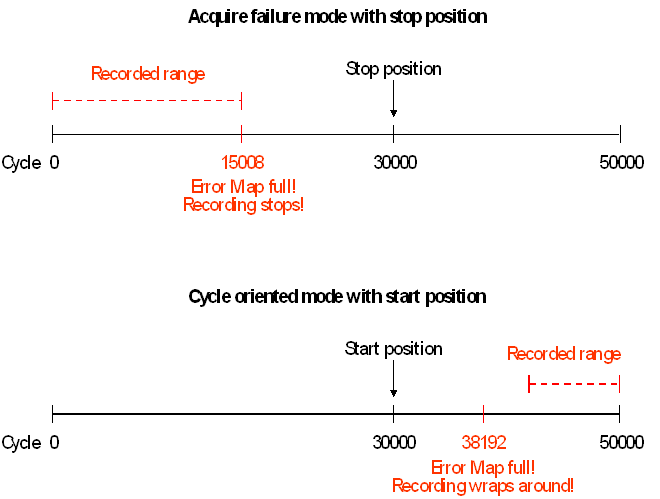

Detailed Error Map
The behavior of the detailed Error Map is affected by the interdependencies of sequencer termination and recording parameters as follows:
Sequencer termination |
Recording mode |
Recording position |
Notes |
|---|---|---|---|
standard termination |
cycle oriented |
start position or position ignored |
Recording will only stop at the end of the test, so that the results for the region of interest may be overwritten by wrapping around. |
stop position |
Recording will stop at the specified position. No complications can arise. |
||
acquire failure |
start position or position ignored |
Recording will stop when the Error Map is full, which may happen before the region of interest is reached. |
|
stop position |
Recording will stop at the specified position or when the Error Map is full. In the latter case, the results for the region of interest may never be recorded. If you let SmarTest select the recording mode, and if the stop position is greater than the number of cycles that can be stored in the detailed Error Map, SmarTest will switch to cycle oriented mode. |
||
non-standard termination with EL, SE, SEEL, STSQ, or STSV |
cycle oriented |
start position
|
Not allowed! FTST? and SQST RUN (which should be used for EL and SEEL) will not execute a functional test for these combinations. |
position ignored |
Recording will be stopped by stopping the sequencers. |
||
stop position |
Not allowed! The recording stop for the STSQ and STSV modes is determined by the sequencer stop as defined by the analyze_delay parameter of SQGB. It is not possible to define a different recording stop position for these termination modes. FTST? and SQST RUN (which should be used for EL and SEEL) will not execute a functional test for these combinations. |
||
acquire failure |
start position or stop position
|
Not allowed! FTST? and SQST RUN (which should be used for EL and SEEL) will not execute a functional test for this combination. |
|
|
position ignored |
Recording will be stopped by stopping the sequencers or when the Error Map is full. A warning will be issued that the Error Map may be full before the region of interest is reached. |
The following figure visualizes the problems that can arise by careless combination of the recording parameters:

In the first example, recording is terminated before the stop position is reached because the Error Map is is in acquire failure mode, and it is full after 15008 cycles (this value depends on the error distribution).
In the second example, the area of interest is overwritten because recording wraps in cycle oriented mode when the Error Map is full. In fact, the start of the Error Map will be overwritten twice because 20000 > 2 * 8192.